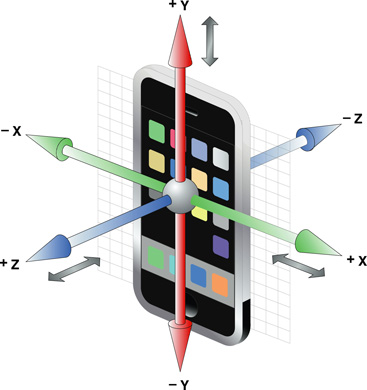
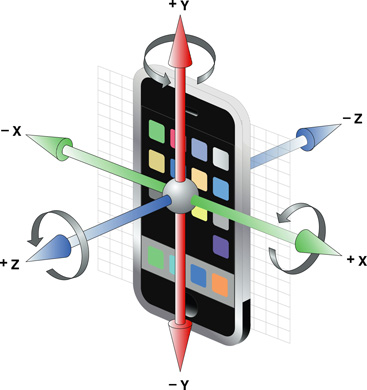

HTML Creatives Design
1. Receiving information from the SDK
In order to get information from the SDK, you need to implement javascript callback functions in your HTML page. The SDK tests the existence of those functions, launches the appropriate service (location, acceleration,…) and calls those functions when appropriate.
a. Getting the window orientation
window.onorientationchange and window.orientationinformation
window.onorientationchange is called when the device is rotated, as well as when your page loads. You can get the value of the orientation by getting the window.orientation value :
- 0 => Portrait mode
- 90 => Landscape counter clockwise
- -90 => Landscape clockwise
- 180 => Portrait upside down
This example will display the device current orientation to the user, and will update it after a rotation.
<!DOCTYPE html>
<html>
<head>
<meta name="viewport" content="initial-scale=1.0, user-scalable=no" />
<script type="text/javascript">
window.onorientationchange = function() {
var orientation = "unknown";
switch (window.orientation) {
case 0:
orientation = "portrait";
break;
case 90:
orientation = "landscape counter clockwise";
break;
case -90:
orientation = "landscape clockwise";
break;
case 180:
orientation = "upside down";
break;
}
document.getElementById('orientation').innerHTML = orientation;
};
</script>
</head>
<body>
<h4>Your device is in "<span id="orientation"></span>" orientation</h4>
</body>
</html>
b. Getting the device GPS coordinate
sas_GPSUpdate(lat, lng);
If you implement this function, it will be called periodically with the user’s latitude and longitude.
Warning : this function will only be called if the application accesses the user’s coordinate, and transfers them to the SDK
This example will display a fullscreen Google Map with a marker which follows the user’s position.
<!DOCTYPE html>
<html>
<head>
<meta name="viewport" content="initial-scale=1.0, user-scalable=no" />
<style type="text/css">
html { height: 100% }
body { height: 100%; margin: 0px; padding: 0px; }
#map_canvas { height: 100%; }
</style>
<script type="text/javascript" src="http://maps.google.com/maps/api/js?sensor=false"></script>
<script type="text/javascript">
var map;
var marker;
function initialize() {
var latlng = new google.maps.LatLng(48.87128,2.3043);
var myOptions = {
zoom: 16,
center: latlng,
mapTypeId: google.maps.MapTypeId.ROADMAP
};
map = new google.maps.Map(document.getElementById("map_canvas"), myOptions);
marker = new google.maps.Marker({
position: latlng,
map: map,
title:"Let's talk!"
});
}
function sas_GPSUpdate(lat, lng) {
var newLatLng = new google.maps.LatLng(lat,lng);
marker.setPosition(newLatLng);
map.setCenter(newLatLng);
}
</script>
</head>
<body onload="initialize()">
<div id="map_canvas" style="width:100%; height:100%"></div>
</body>
</html>
b. Being warned when the device is shaked
sas_deviceShaked();
If you implement this function, it will be called whenever the device is shaked by the user. This helps you make interactive ads, with a predefined behavior when the user shakes the device.
This simple example will ask the user to shake the device, and it will open a popup.
<!DOCTYPE html>
<html>
<head>
<meta name="viewport" content="initial-scale=1.0, user-scalable=no" />
<style type="text/css">
h1 { text-align:center; }
</style>
<script type="text/javascript">
function sas_deviceShaked() {
alert("Let's talk!");
}
</script>
</head>
<body>
<h1>Shake your Phone</h1>
</body>
</html>
c. Responding to acceleration events
sas_accelerationUpdate(x, y, z);
If you implement this function, it will be called whenever the device accelerometer receives updates. This allows you to create ads with objects moving with the device orientation/acceleration.
The 3 axes are defined with the following criterion :

Warning in order to have the device axes matching the html document axes, you need to know the orientation of the device. See Getting the window orientation for more information.
This example will display a div moving with the device motion (the axes don’t match the window orientation).
<!DOCTYPE html>
<html>
<head>
<meta name="viewport" content="width=device-width,user-scalable=no" />
<style>
#logo {
width: 120px;
height: 20px;
border-radius: 5px;
-webkit-radius: 5px;
background-color: #ffdb00;
position:absolute;
top: 0px;
left: 0px;
text-align:center;
}
</style>
</head>
<body>
<div id="content">
<h1>Smart AdServer</h1>
<div id="logo">Let's talk!</div>
</div>
<script>
var x = 0;
var y = 0;
var vx = 0;
var vy = 0;
var ax = 0;
var ay = 0;
var delay = 10;
var vMultiplier = 0.01;
function sas_accelerationUpdate(x, y, z) {
// Here you should check the window's orientation to assign the axes properly
ax = x;
ay = y;
}
setInterval(function() {
vy = vy + -(ay);
vx = vx + ax;
var logo = document.getElementById("logo");
y = parseInt(y + vy * vMultiplier);
x = parseInt(x + vx * vMultiplier);
if (x<0) { x = 0; vx = 0; }
if (y<0) { y = 0; vy = 0; }
if (x>document.documentElement.clientWidth-120) { x = document.documentElement.clientWidth-120; vx = 0; }
if (y>document.documentElement.clientHeight-20) { y = document.documentElement.clientHeight-20; vy = 0; }
logo.style.top = y + "px";
logo.style.left = x + "px";
}, delay);
</script>
</body>
</html>
d. Responding to gyroscope events
sas_rotationUpdate(x, y, z);
If you implement this function, it will be called whenever the device gyroscope receives update. This allows you to create ads with objects moving with the device rotation.
The 3 axes are defined with the following criterion :

Warning in order to have the device axes matching the html document axes, you need to know the orientation of the device. See Getting the window orientation for more information.
This examples displays a 3D CSS cube rotating with the device.
<!DOCTYPE html>
<html>
<head>
<meta name="viewport" content="initial-scale=0.5, user-scalable=no" />
<style type="text/css">
body {
-webkit-perspective: 800;
-webkit-perspective-origin: 50% 100px;
}
#cube {
position: relative;
margin: 100px auto 0;
height: 200px;
width: 200px;
-webkit-transition: -webkit-transform 2s linear;
-webkit-transform-style: preserve-3d;
}
.face {
position: absolute;
height: 160px;
width: 160px;
padding: 20px;
background-color: rgba(255, 219, 0, 0.7);
font-size: 50px;
line-height: 1em;
color: #fff;
border: 1px solid #555;
text-align:center;
-webkit-border-radius: 3px;
}
#cube .one {
-webkit-transform: rotateX(90deg) translateZ(100px);
}
#cube .two {
-webkit-transform: translateZ(100px);
}
#cube .three {
-webkit-transform: rotateY(90deg) translateZ(100px);
}
#cube .four {
-webkit-transform: rotateY(180deg) translateZ(100px);
}
#cube .five {
-webkit-transform: rotateY(-90deg) translateZ(100px);
}
#cube .six {
-webkit-transform: rotateX(-90deg) rotate(180deg) translateZ(100px) ;
}
</style>
<script type="text/javascript">
var xAngle = 0, yAngle = 0, zAngle = 0;
function sas_rotationUpdate(x,y,z) {
xAngle += parseInt(x*10);
yAngle += parseInt(y*10);
zAngle += parseInt(z*10);
document.getElementById('cube').style.webkitTransform = "rotateX("+xAngle+"deg) rotateY("+yAngle+"deg) rotateZ("+zAngle+"deg)";
};
</script>
</head>
<body>
<div id="cube">
<div class="face one">
Let's talk!
</div>
<div class="face two">
We can help!
</div>
<div class="face three">
Let's talk!
</div>
<div class="face four">
We can help!
</div>
<div class="face five">
Let's talk!
</div>
<div class="face six">
We can help!
</div>
</div>
</body>
</html>
2. Sending information to the SDK
When the creative requests to open a link (i.e. when the user taps on a link, or with document.location.href), the SDK first checks whether the link is a request for an action, if yes, it will execute the appropriate action instead of letting the page follow the link. This is how you can send information to the SDK.
a. Opening the post-click URL in a new layer
When an ad is programmed on the Smart AdServer interface, it usually has a post-click URL, which points to the website the advertiser wants the user to see.
By default, the whole ad view is considered as a big button, which opens a new layer, which loads the post-click URL, when the user taps on it. If you want your ad to be manipulated by the user, you need to create a global variable called : sasSupportsClick and set its value to true. This will prevent the SDK to open the ad’s post-click URL when the user taps on the ad. You can decide to open the ad post-click URL with href=“sas:click”
This example shows an ad which opens the post-click URL after 10 seconds (with javascript), or if the user taps on the link.
<!DOCTYPE html>
<html>
<head>
<meta name="viewport" content="initial-scale=1.0, user-scalable=no" />
<script type="text/javascript">
var sasSupportsClick = true;
setTimeout("openAd()",10000);
function openAd() {
document.location.href = "sas:click"
}
</script>
</head>
<body>
<p><a href="sas:click">Click here</a> or wait 10 seconds to see this advertisement</p>
</body>
</html>
b. Closing the ad
Ads can have a “skip” button, which can be positionned at a corner of the ad’s frame, and looks like this :
If you want to have a custom HTML skip button, you first need to tell the SDK that your ad’s HTML can be manipulated : create a global variable called : sasSupportsClick and set its value to true.
For the ad to close, you need to create a link with href=sas:close. When the html page tries to open a “sas:close”, the SDK will intercept the request, and close the ad, as if the user had pressed the skip button. You can also close the ad with javascript : document.location.href = “sas:close”.
Warning as your ad will allow the user to interact with it, the SDK will not intercept the user’s taps. So if your ad has a post-click URL, you need to let the SDK know when you want to open the click URL, with “sas:click” (see example above).
This example shows an ad which has a click url button, a skip button, and which will be closed after 10 seconds.
<!DOCTYPE html>
<html>
<head>
<meta name="viewport" content="initial-scale=1.0, user-scalable=no" />
<script type="text/javascript">
var sasSupportsClick = true;
setTimeout("closeAd()",10000);
function closeAd() {
document.location.href = "sas:close"
}
</script>
</head>
<body>
<p>
<a href="sas:click">Click here to see the ad</a> <br />
<a href="sas:close">Or here to close it</a>
</p>
</body>
</html>
c. Pre-loading your ad
By default, an ad is displayed when the WebView displaying it has been loaded. For some heavy creatives like those including videos, or for those loading further resources with javascript, you may want to postpone the ad’s display.
In order to do this, you need to create a global variable called sasSupportsReadyToDisplay and set its value to true. When the ad is ready to be displayed, setting the document.location.href value to sas:readyToDisplay will make it appear. During the loading progress, you must inform the SDK of the loading progress by setting the document.location.href value to sas:progress:xxx where xxx is the percentage of loading (a value between 0 and 99). The SDK will fail after 5 seconds without progress information, after what it will consider the ad download to be failed. So the sas:progress is mandatory. Because it’s value is displayed to the user, it has to be an accurate information.
Check the next part for a complete example including a complete video integration, including error handling.
d. Fail to download the ad
If an error preventing the user from viewing the ad properly occurs, you can set the document.location.href value to sas:error. This will cause an “ad download failure” in the SDK. This will cause the view to be removed, and the application to receive an ad failure information, so it can adapt its behavior. An example of when you want to call this : if the user is in good reception conditions, the ad starts to load a video buffer, and suddently the connection becomes too slow, you probably don’t want to block the application until the connection gets better.
This example shows a basic implementation of a video player with autoload, progress feedback, error handling, and postponed display of the creative :
<html>
<head>
<script type="text/javascript" charset="utf-8">
var sasSupportsReadyToDisplay = true;
window.addEventListener('load', load, false);
function load() {
video = document.getElementById('video');
video.addEventListener('canplaythrough', canplaythrough, false);
video.addEventListener('progress', progress, false);
video.addEventListener('abort', error, false);
video.addEventListener('emptied', error, false);
video.addEventListener('error', error, false);
video.play();
video.pause();
}
function progress(e) {
document.location.href = 'sas:progress:'+parseInt(100 * video.buffered.end(0) / video.duration);
}
function canplaythrough() {
document.location.href = 'sas:readyToDisplay';
video.play();
}
function error(e) {
video.pause();
document.location.href = 'sas:error';
}
</script>
</head>
<body>
<video src="http://www.808.dk/pics/video/gizmo.mp4" id="video" webkit-playsinline></video>
</body>
</html>